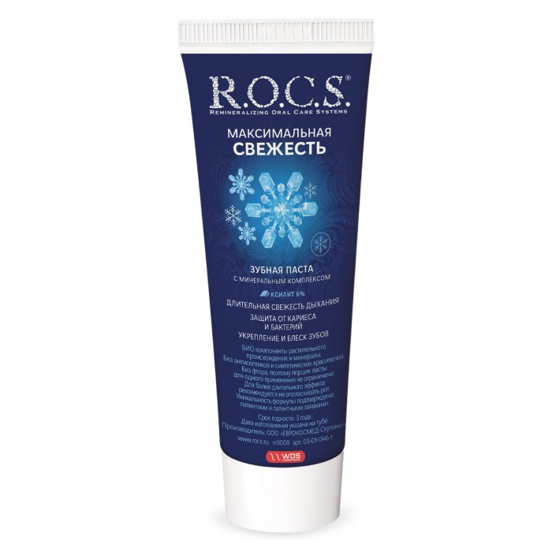
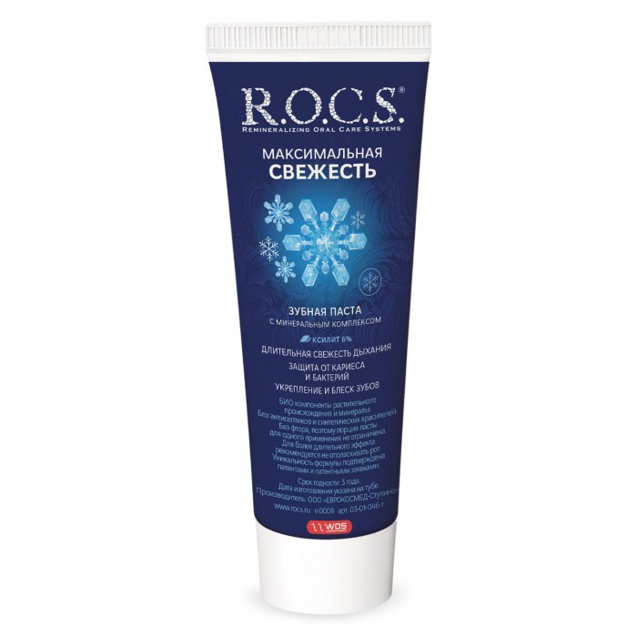

ПАСТА ROCS
 

Цена:
372.00₽
316.20₽
-15%
| Бренд | ROCS |
| Форма выпуска | Rocs зубная паста максимальная свежесть 94 гр |
| Срок годности | Длительный срок годности |
Информация о товаре
Таблетки для очищения зубных протезов Корега Био Формула обеспечивают бережное и эффективное очищение зубных протезов.
Основные преимущества:
- Глубокое очищение даже в труднодоступных местах
- На 99,9% уменьшают число бактерий, вызывающих неприятный запах изо рта.*
- Не царапают зубной протез при очищении**
*при замачивании, по результатам лабораторных исследований. Оценка антимикробной эффективности средства для чистки зубных протезов. Обзор компании ГСК, 2012
**Обоснование свойств по отсутствию абразивных частиц в составе средств для очистки зубных протезов Корега. Обзор компании ГСК, 2007